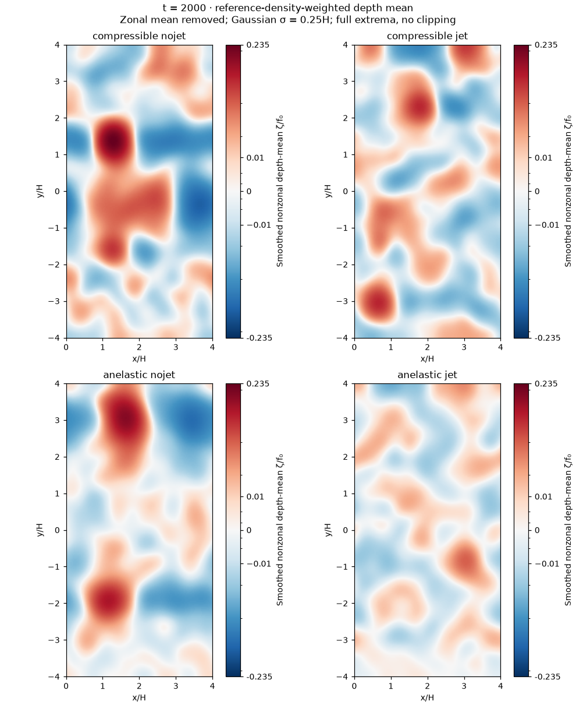

The compressible and anelastic jet/no-jet cases all continued unchanged from their own t = 1000 checkpoints and reached t = 2000. Time is nondimensional. All four jobs have finished.
Top two rows: jet vorticity and tracer. Bottom two: no-jet vorticity and tracer. Three heights across.
Top two rows: jet vorticity and tracer. Bottom two: no-jet vorticity and tracer. Three heights across.
401 frames per movie, sampled every 5 simulation units, at 8 fps. All 2001 integer-time states per case were analyzed. Actual heights: z/H = 0.19375, 0.49375, 0.89375. Vorticity ζ/f₀ uses shared per-depth full-extrema limits across all four cases and all times, with asinh width 0.01. Positive is cyclonic; negative is anticyclonic. Limits may differ from the earlier t≤1000 movie because the interval is longer. Tracer uses the unchanged absolute-concentration mapping asinh((C−0.1)/0.005), range 0–1, with labeled concentration ticks. There is no per-frame normalization. Late tracer contrast is weak as concentrations mix toward uniformity.

Reference-density-weighted depth mean, zonal mean removed, Gaussian smoothing σ = 0.25H. Common full-extrema color scale for these four fields. Sign statistics exclude |y| ≥ 3.5H. This is a spatial diagnostic, not a vortex count or a measurement of inverse energy flux.
| Case | Anticyclonic enstrophy share, t=1900–2000 | Nonzonal depth-mean KE, t=2000 | Maximum Mach, t=2000 | Mean-T-profile departure | Minimum mean cap N² |
|---|---|---|---|---|---|
| Compressible, no jet | 40.4% | 0.00595 | 0.667 | 44.8% | -0.596 |
| Compressible, jet | 38.9% | 0.00161 | 0.373 | 45.0% | -0.616 |
| Anelastic, no jet | 33.3% | 0.00465 | 0.534 | 15.9% | 9.240 |
| Anelastic, jet | 45.0% | 0.00046 | 0.268 | 14.5% | 5.819 |
The compressible no-jet endpoint retains a concentrated cyclonic core visible at the lower and middle sampled heights.
No case has an anticyclonic majority in this late-time smoothed depth-mean enstrophy diagnostic. The no-jet cases retain more nonzonal depth-mean kinetic energy than their jet counterparts. This does not by itself establish a single preferred vortex.
The initial condition already contained large mixed-sign eddies. These movies test their evolution and persistence under convection; morphology and enstrophy shares alone do not establish spontaneous LSV formation or an inverse cascade. Jet/no-jet differences also include whole-column zonal-mean relaxation, not only shear in the cap.
Mean temperature-profile departures have reached about 45% in the compressible cases, versus 14–16% in the anelastic cases. The compressible energy residual is approximately −29% of accumulated bottom heat. It remains unresolved; no compensating heating was added. The anelastic compressible-energy proxy is not its conserved invariant and must not be interpreted as a comparable numerical loss.
Mean cap N² first became nonpositive at t = 1079 in the compressible jet case and t = 1353 without the jet. Each had nonpositive minimum mean cap N² at every sampled time from 1900 through 2000. Both compressible cases have negative mean N² in part of the nominal lower cap. The continuation guards checked finite state, positivity, Mach, mass and profile departure; they did not require positive cap N². Thus successful completion does not validate the intended stable-cap configuration. Local high Mach also limits the anelastic approximation.
Job 2197446 stopped at t = 3 during the full-grid startup test. It did not enter the intended t = 10–2000 integration. At the last saved time, t = 2.5, maximum Mach was 0.777 and the hotspot was at the upper/south-wall corner. The output callback's assertion did not record which health threshold triggered; a Mach-limit crossing is plausible but unconfirmed. This experiment is not included in the completed-run movies.
Its production-grid test used about 50 seconds of integration time; total GPU allocation, including initialization and checks, was 8 minutes 27 seconds. The run has not been resubmitted and its thresholds have not been raised.
128 × 256 × 80; box 4H × 8H × H; Ω = 3 at 67.5°N; β = 0.0032116888521660312. Dry compressible/anelastic Breeze, WENO9, no closure. Same mixed-sign seed, initial eddy RMS 0.136, bottom heat flux 0.03125, conduction and horizontal-mean cap thermal restoration. Periodic x, bounded y and z. Each continuation preserves its preceding state and forcing.
The jet target has peak 0.015625, is zero below z/H = 0.82, and ramps to full strength by 0.96. The acceleration (U_target−⟨u⟩ₓ)/200 acts on the zonal mean throughout the column, including relaxation toward zero below the cap. No-jet cases disable that relaxation.
Summary and diagnostics · Time-resolved metrics · Media verification and scales · Continuation source · Earlier t=0–1000 movies
Simulation array 2197612 continues 2187099. Unity analysis/render job 2209671. All scientific computation, analysis, rendering and media decoding stayed on Unity.